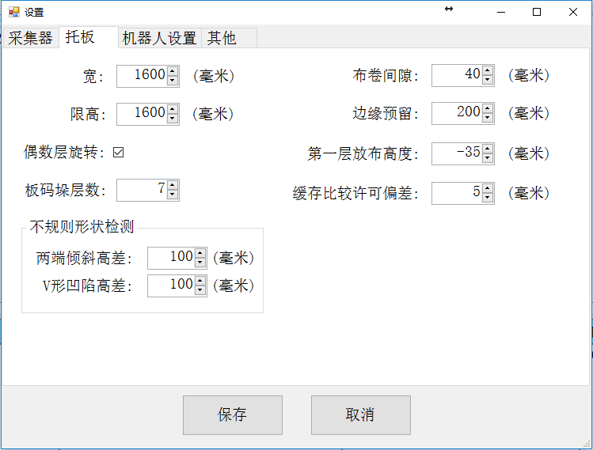
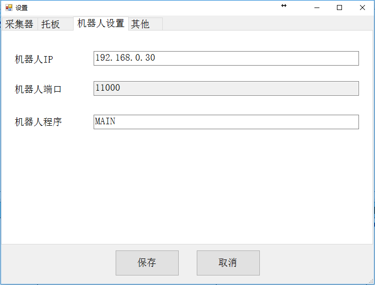
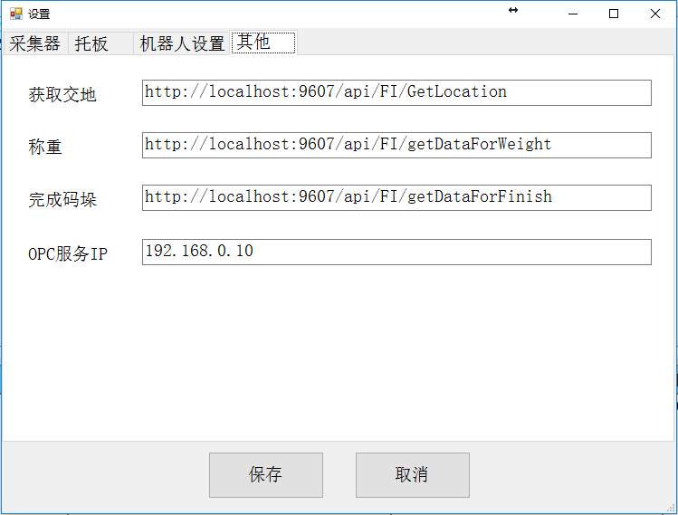
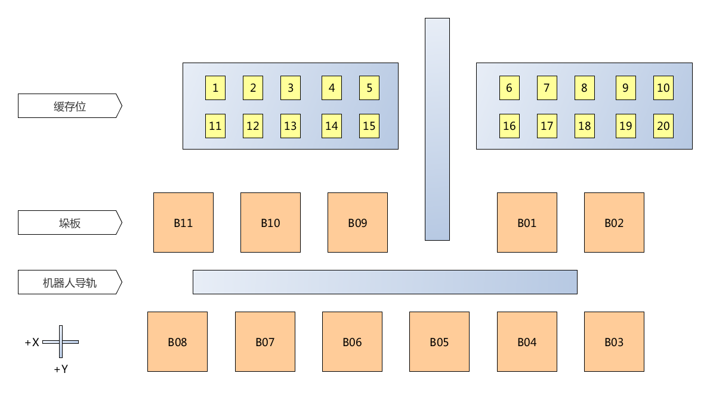
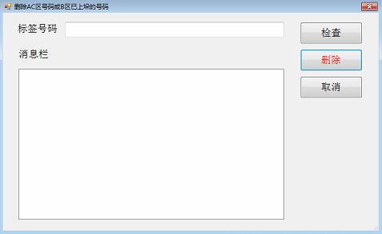

本软件包含如下文件和目录：
鼠标双击桌面图标“溢达机器人码垛”。
也可以在软件目录里，鼠标双击yidascan.exe程序。
如上图所示，我们依次介绍主窗口各部分的名称和用途。
工具条： 包含软件系统的全部操作命令按钮。
运行状态栏： 显示计数器、流程运行状态、扫描到的标签号码、手持扫描号码输入栏、机器人状态等运行信息。
号码表： 显示进入软件系统的号码全列表。
日志栏： 分别显示号码扫描、称重、缓存位、机器人等节点的实时状态日志。
数据流： 从左到右，依次显示各节点的号码，及号码流动。节点包括：扫描位、称重位、缓存位、缓存区、标签朝向识别、v型支架。
手动扫码： 用于接收手持扫描枪的扫码数据。使用手持扫描枪时，光标应当停留在此输入框，否则不能采集到扫描数据。
设备状态栏： 显示OPC连接状态、采集器连接状态、机器人连接状态等。连接有效时，显示为绿色，无效时显示为灰色。
计时器： 从按下“启动”按钮时开始计时，到按下“停止”按钮时，停止计时。计时格式是：天.小时:分钟:秒。
1. 启动流程
点击工具条按钮“新任务”，日志栏会显示启动流程，启动过程完成以后，计数器右侧的颜色条显示为浅绿色。
开始新任务时，所有的节点数据都会清零。所以务必保证生产线各节点上没有物料。
如果在生产过程中因故停下来，然后再继续时，可以点击“任务继续”按钮。这个按钮的功能也是启动生产线流程，但是不需要清除生产线各节点的物料，同时也不会清除软件内各队列的数据。
注意：
在启动之前，应当留意选择是否启动机器人操作。通常，应当把“启动机器人”选择框打上勾，意味着启动机器人。
如果生产线调试时，不需要启动机器人操作，则应当把此项取消。

2. 停止流程
点击工具条按钮“停止”, 日志栏会显示停止流程，停止过程完成以后，计数器右侧的颜色条显示为橙色。
3. 退出软件
点击工具条按钮“退出”，软件系统会提示，要求用户确认退出，用户确认以后，软件系统结束运行。
系统退出时，会把当前各队列的数据保存到taskq.json文件。当再次打开软件时，这个文件内的数据会自动加载。
这意味着，你可以在生产停止的情况下，退出软件。当需要继续生产时，可以再打开软件，从上次停止的地方开始继续运行。
如果码垛流程正在进行中，软件的流程处于运行状态，此时是不能直接关闭软件的。正确的操作步骤是，应用鼠标点工具栏的“停止”按钮，停止工作流程，然后再点“退出”退出软件。**
4. 配置
配置各种通信参数和运行参数。
4.1 设置采集器通信参数。

采集器有两种通信方式，一种是串口通信，一种是以太网通信。
串口通信需要设置串口号和波特率，其中，波特率必须和设备自身设定的波特率一致。
以太网通信需要设置IP地址和端口，这两个参数由设备决定的，在设置时必须知道要连接的设备的IP地址和端口。
参数设好以后，按下“确定”按钮，保存参数。按“取消”按钮，则放弃所做的修改。
4.2 设置托板参数。

设置托板尺寸和布卷码垛参数。
长，宽：指垛板的尺寸。
限高：布卷码放的最大高度。
布卷间隙：布卷之间的间隔。
边缘预留：垛板上最靠边的布卷和垛板边缘的间隔。设置此参数是为避免布卷尺寸有误差，可能导致布卷掉出垛板。
缓存许可：在B区缓存比较布卷大小时，允许一定误差。因为如果严格按照布卷直径的数字比较，即使出现几毫米的差别，也会产生交换布卷位置的动作。而很多这样的交换是不必要的。缓存许可设置的，就是布卷直径比较时，忽略的直径差别。
4.3 设置机器人参数。

需要设置参数包括机器人IP地址和端口，以及机器人执行的程序名。
IP地址和端口：按照机器人示教器所显示的IP地址和端口设定。
机器人程序：机器人示教器上的程序名。本软件在发送给机器人码垛信号后，机器人会调用此程序。这个程序做的是抓料和移动到指定位置放料。程序代码在示教器上可以看到。
4.4 设置其他参数。

这里包括和ERP接口的通信地址，以及OPC的IP地址。
获取交地、称重、完成码垛三个通信地址，都由ERP系统提供。
OPC地址总是127.0.0.1。
4.5 缓存位和托板编号。 
5. 查看日志
打开日志目录，然后选择目录下的日志文件，用任何文字编辑器都可以打开查看。
日志文件以日期命名。
6. 其他功能
6.1 机器人启动
当机器人需要单独启动时，点击此按钮，启动机器人运行。
6.2 机器人停止
当机器人流程需要单独停止时，点击此按钮，停止机器人运行。
6.3 称重复位
称重失败时，输送带停止。此功能告知OPC称重完成，可以让输送带继续走。
6.4 删除标签
扫描发生重码时，运行状态颜色条会显示红色，并显示“扫描重复”。此时，应当点击按钮“其他/删除标签”，弹出窗口。

首先，用手持扫描枪扫描需要删除的标签条码，扫描成功后，标签号码会显示在输入框里。也可以直接在输入框用键盘输入物料标签号码。
然后，点击按钮“检测”，查看这个号码是否存在。
最后，点击按钮“删除”，该号码就会从软件系统的号码队列和数据库中同时删除。
如果点按钮“取消”，则不会做删除动作，直接从此窗口退出。
消息栏会显示命令操作的结果。
6.5 帮助
显示本文档。
Windoes 7/8/10操作系统。
Miscrosoft Framework 4.5或以上。
Microsoft SQL Server 2008数据库。
安川DX100机器人。
普通手持一维条码扫描枪。
吉恩士工业智能数字相机。
其他支持OPC协议的PLC设备。
项目开发：广州恒微机电设备有限公司
软件开发： Guangzhou Golden Beaver software workshop.a
林工 <jine_gz@139.com> 手机：13544376094
张工 <laozhang_gz@139.com>
更新时间：2017-03-16 10:02